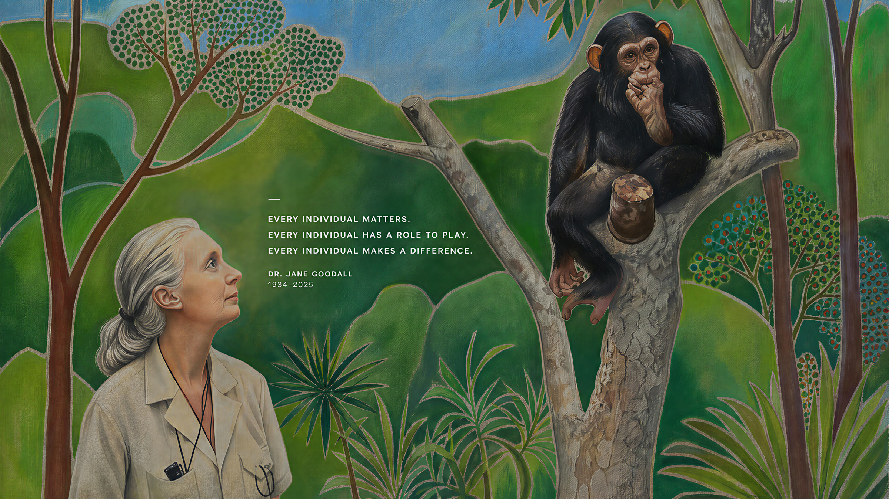

Exploring the stories behind people, animals & nature.

“I believe every voice deserves to be heard.”
My mission is to understand overlooked people, animals, and communities through empathy, psychology, and research, and to turn that understanding into meaningful action. I hope to help build a more inclusive world where every individual is respected and every story matters.
Empathy
Inquiry
Impact

My role model · Dr. Jane Goodall
Jane Goodall believed that every individual matters, human or animal. That belief runs through everything I do as a listener, a researcher, and an advocator.